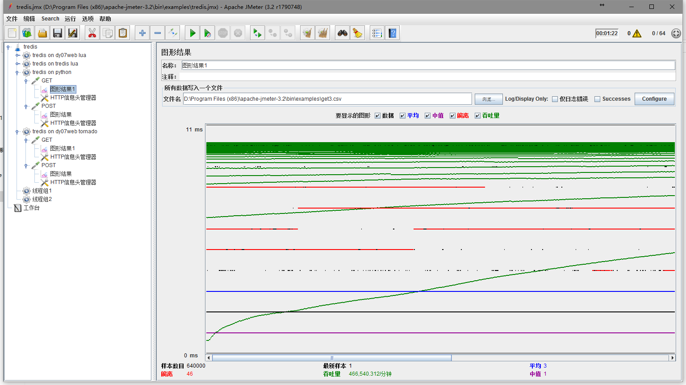

tornado,aiohttp,openresty,golang性能测试
stdhi
5月 19, 2017
测试结果
==============
测试架构
graph TD
jmeter-->|10.116.22.119:10000|wsgi
wsgi-->|127.0.0.1:6397|Redis
tornado测试
测试代码
#! /bin/python
from __future__ import print_function
from __future__ import unicode_literals
import concurrent.futures
import redis
from tornado import gen
import tornado.httpserver
import tornado.ioloop
import tornado.options
import tornado.web
import json
from tornado.web import asynchronous
from tornado.options import define, options
define("port", default=10000, help="run on the given port", type=int)
executor = concurrent.futures.ThreadPoolExecutor(2)
class Application(tornado.web.Application):
def __init__(self):
handlers = [(r"/tokens", TokenHandler),]
settings = dict(debug=False)
super(Application, self).__init__(handlers, **settings)
class BaseHandler(tornado.web.RequestHandler):
pass
class TokenHandler(BaseHandler):
r = redis.StrictRedis(host='127.0.0.1', port=6379)
def get(self):
token = self.r.spop('tokens')
if token is not None:
self.write(token)
else:
self.write('null')
def post(self):
data = json.loads(self.request.body.decode('utf8'))
[self.r.sadd('tokens', x) for x in data]
self.write('ok')
def main():
tornado.options.parse_command_line()
http_server = tornado.httpserver.HTTPServer(Application())
http_server.listen(options.port)
tornado.ioloop.IOLoop.current().start()
if __name__ == "__main__":
main()
测试结果截图
- GET请求配置
- POST请求配置
- jmeter线程数配置
- tornado系统消耗

- GET请求测试结果
- POST请求测试结果
openresty+lua测试
测试代码
worker_processes 1;
events {
worker_connections 1024;
use epoll;
}
lua_package_path '/usr/local/openresty/lualib/?.lua;;';
lua_package_cpath '/usr/local/openresety/lualib/?.so;;';
server {
listen 10000;
access_log logs/tredis.access.log main;
lua_need_request_body on;
location /tokens {
content_by_lua_block {
local cjson = require "cjson"
local cjson2 = cjson.new()
local cjson_safe = require "cjson.safe"
local redis = require "resty.redis"
local red = redis:new()
red:set_timeout(1000) -- 1 sec
-- or connect to a unix domain socket file listened
-- by a redis server:
-- local ok, err = red:connect("unix:/path/to/redis.sock")
local ok, err = red:connect("127.0.0.1", 6379)
if not ok then
ngx.say("failed to connect: ", err)
return
end
method_name = ngx.req.get_method()
if (method_name == 'POST') then
local data = ngx.req.get_body_data()
data = cjson.decode(data)
for k, v in pairs(data) do
ok, err = red:sadd("token", v)
if not ok then
ngx.say("POST failed to set ", err)
return
end
end
ngx.say("set result: ", ok)
end
if (method_name == 'GET' ) then
local res, err = red:spop("token")
if not res then
ngx.say("GET failed ", err)
return
end
ngx.say(res)
end
local ok, err = red:set_keepalive(10000, 100)
if not ok then
ngx.say("failed to set keepalive: ", err)
return
end
return
}
}
location / {
root html;
}
}
测试结果截图
- openresty系统消耗

- GET请求测试结果
- POST请求测试结果
golang 测试
测试代码
package main
import (
"encoding/json"
"fmt"
"runtime"
//"github.com/mediocregopher/radix.v2"
"github.com/mediocregopher/radix.v2/pool"
"github.com/mediocregopher/radix.v2/redis"
//"io/ioutil"
//"flag"
"errors"
"log"
"net/http"
"time"
)
func newPool() (*pool.Pool, error) {
return pool.New("tcp", "127.0.0.1:6379", 10)
}
var (
p *pool.Pool
)
func Handler(w http.ResponseWriter, r *http.Request) {
var conn *redis.Client
var err error
err = errors.New("init")
delta := 10 * time.Millisecond
for err != nil {
log.Println(err)
if p.Avail() > 0 {
conn, err = p.Get()
continue
}
time.Sleep(delta)
delta = delta * 2
}
defer p.Put(conn)
if r.Method == "GET" {
resp := conn.Cmd("SPOP", "tokens")
if resp.Err != nil {
log.Println("GET error ", resp.Err)
fmt.Fprintf(w, "error")
return
}
token, err := resp.Str()
if err != nil {
log.Println("GET error ", err)
fmt.Fprintf(w, "error")
return
}
log.Println("GET ok ", token)
fmt.Fprintf(w, token)
return
}
if r.Method == "POST" {
var t []string
r.ParseForm()
for key, _ := range r.Form {
//LOG: {"test": "that"}
err := json.Unmarshal([]byte(key), &t)
if err != nil {
log.Println("json error ", err)
fmt.Fprintf(w, "error")
return
}
}
for _, v := range t {
resp := conn.Cmd("SADD", "tokens", v)
if resp.Err != nil {
log.Println("POST error ", resp.Err)
fmt.Fprintf(w, "error")
return
}
i, err := resp.Int()
if err != nil {
log.Println("POST error ", err)
fmt.Fprintf(w, "error")
return
}
log.Println("POST ok ", i)
}
fmt.Fprintf(w, "ok")
}
}
func main() {
runtime.GOMAXPROCS(1)
p, _ = pool.New("tcp", "127.0.0.1:6379", 10)
http.HandleFunc("/tokens", Handler)
s := &http.Server{
Addr: ":10000",
ReadTimeout: 30 * time.Second,
WriteTimeout: 30 * time.Second,
MaxHeaderBytes: 1 << 20,
}
log.Fatal(s.ListenAndServe())
}
测试结果截图
- golang系统消耗

- GET请求测试结果
 - POST请求测试结果
aiohttp+aioredis 测试
测试代码
from aiohttp import web
import asyncio
import aioredis
loop = asyncio.get_event_loop()
pool = None
async def get_pool():
global pool
if pool is None:
pool = await aioredis.create_pool(
('127.0.0.1', 6379),
minsize=1, maxsize=10)
return pool
async def get_handler(request):
pool = await get_pool()
with await pool as conn:
token = await conn.execute('spop', 'tokens')
return web.Response(text='ok {0}'.format(token))
async def post_handler(request):
pool = await get_pool()
body = await request.json()
with await pool as conn:
for x in body:
await conn.execute('sadd', 'tokens', x)
print("POST {0}".format(body))
return web.Response(text=body[0])
async def get_app():
app = web.Application()
app.router.add_get('/tokens', get_handler)
app.router.add_post('/tokens', post_handler)
return app
if __name__ == '__main__':
app = loop.run_until_complete(get_app())
web.run_app(app, host='0.0.0.0', port=10000)
测试结果截图
- aio系统消耗

- GET请求测试结果
- POST请求测试结果
sanic测试
测试代码
import sanic
from sanic import Sanic
import logging
import aioredis
logger = logging.getLogger(__name__)
async def setup(sanic, loop):
sanic.conn = []
sanic.redis = []
for n in range(10):
connection = await aioredis.Connection.create(host='127.0.0.1',
port=6379)
sanic.redis.append(connection)
app = Sanic(name=__name__)
@app.listener('before_server_start')
async def before_server_start(app, loop):
logger.info('Starting redis pool')
app.redis_pool = await aioredis.create_pool(
('127.0.0.1', 6379),
minsize=10,
maxsize=10)
@app.listener('after_server_stop')
async def after_server_stop(app, loop):
logger.info('Closing redis pool')
app.redis_pool.close()
await app.redis_pool.wait_closed()
@app.middleware('request')
async def attach_db_connectors(request):
# Just put the db objects in the request for easier access
logger.info('Passing redis pool to request object')
request['redis'] = request.app.redis_pool
@app.route('/tokens', methods=['GET'])
async def get_tokens(request):
'''Check to see if the value is in cache, if so lets return that'''
try:
with await request['redis'] as redis_conn:
token = await redis_conn.execute('spop', 'tokens')
return sanic.response.HTTPResponse(token, status=200)
except aioredis.ProtocolError:
logger.critical('Unable to connect to state cache')
return sanic.response.HTTPResponse('error', status=500)
@app.route('/tokens', methods=['POST'])
async def post_tokens(request):
tokens = request.json
try:
with await request['redis'] as redis_conn:
for x in tokens:
await redis_conn.execute('sadd', 'tokens', x)
return sanic.response.HTTPResponse('ok', status=200)
except aioredis.ProtocolError:
logger.critical('Unable to connect to state cache')
return sanic.response.HTTPResponse('error', status=500)
if __name__ == '__main__':
app.run(host='0.0.0.0', port=10000)
测试结果截图
- sanic系统消耗

- GET请求测试结果
- POST请求测试结果